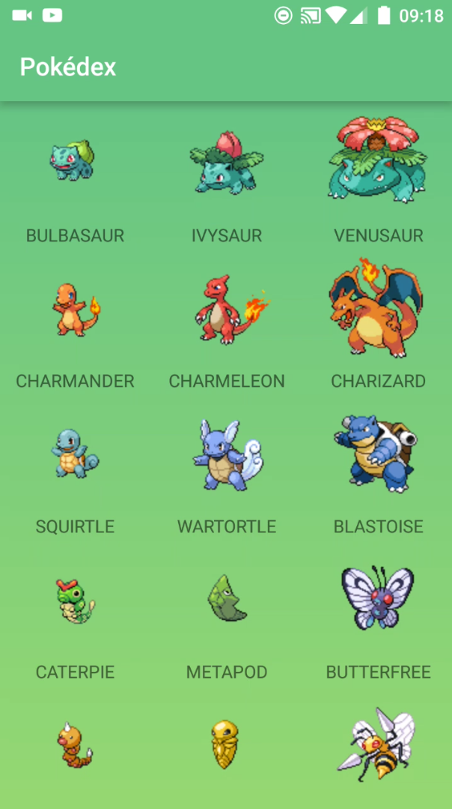

Pokedex Android App
Video of App
My younger brother and I are big Pokemon fans. As he is young, he often has many questions about what pokemon look like or how to spell there name. Eventually, asnwering all these questions all the times gets a bit annoying.
Then I had an idea, and idea that could "kill 2 birds with 1 stone." I could design my first Android app AND solve this problem.
So I developed a Pokedex app. For any readers who are not Pokemon fans, it essentially shows all the Pokemon, a photo of them and their name.
My first design hurdle was a database. I am a lazy person, and I didn't want to have to make a database for roughly 800+ Pokemon!
Eventually, I stumbled across PokeAPI, which is a REST API containing extensive information about all Pokemon.
The one small issue was that the API did not allow you to make a request for a large number of pokemon at once, otherwise their service would be overloaded. This meant that as you are scrolling through the app, it is continously loading the further you scroll. This sometimes means that you have to wait a second for it to catch up, but it is still perfectly usable.
The app used Retrofit to consume the API and Glide to download the images. I developed the app in Android Studio and the video was filmed on a OnePlus 3 smartphone.
It was a worthwhile effort. I have learnt a lot about Anroid app development and consuming an API and it made my brother stop asking me questions, for now!